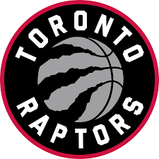

Los Toronto Raptors (en español, Velociraptores de Toronto) son un equipo profesional de baloncesto de Canadá con sede en Toronto, Ontario. Compiten en la División Atlántico de la Conferencia Este de la National Basketball Association (NBA) y disputan sus partidos como locales en el Scotiabank Arena, ubicado en el centro de la ciudad de Toront.
Finalizaron la temporada regular como campeones de su división y segundos de la Conferencia Este con un balance de 58-24. Ya en play-offs, se deshicieron en primera ronda de Orlando Magic (4-1) y ganaron a los 76ers, con una canasta agónica de Kawhi Leonard en el séptimo partido (4-3).46 En las Finales de Conferencia, tras perder los dos primeros partidos, vencieron a los Milwaukee Bucks de Giannis Antetokounmpo (4-2),47 accediendo así por primera vez en su historia a las Finales de la NBA, donde se enfrentaron a los vigentes campeones, los Golden State Warriors. Loa Raptors lograron imponerse 4-2 y conquistaron su primer título de la NBA, y Kawhi Leonard fue nombrado MVP de las Finales.
Llegaron a la liga tras la expansión que se realizó en 1995, junto con los Vancouver Grizzlies. Tras la marcha a Memphis de estos últimos en 2001, los Raptors quedaron como el único equipo fuera de las fronteras de los Estados Unidos. El 13 de junio de 2019, se convirtieron en el primer equipo no estadounidense en ganar la NBA. Para la temporada 2020-21 disputarán sus partidos como local en el estadio Amalie Arena en Tampa, Florida.
 Indice
Indice